Politikwissenschaftliche Statistik mit R. Sitzung 6: Visualisierung (I) Univariate Verteilungen
Christoph Garwe, Philipp Meyer, Laura Brune und Christoph Hönnige
Institut für Politikwissenschaft, Leibniz Universität Hannover1. Einleitung
Wir haben unsere beiden Datensätze in den vergangenen Sitzungen eingeladen, einige Variablen umkodiert und anhand univariater Maße einen ersten Eindruck von ihrer Verteilung erhalten. Dieser erste Eindruck reicht allerdings nicht aus, um wirklich zu verstehen, wie die Variablen verteilt sind. Deshalb möchten wir in dieser Sitzung etwas mehr Anschaulichkeit schaffen, indem wir die Verteilung der Variablen visualisieren. Wir bleiben dabei im Bereich der univariaten Statistik, betrachten also jeweils nur eine einzelne Variable.
2. Datensätze laden und umkodieren
Damit wir mit unseren Datensätzen und den darin enthaltenen Variablen arbeiten können, müssen wir sie wie immer zuerst laden und zu unseren Zwecken umkodieren.
getwd()
setwd("eigener Pfad")
library(foreign)
gles <- read.spss(file = "ZA6801_de_v4-0-1.sav", to.data.frame = TRUE)
lijphart <- read.csv2("Lijphart_Data_recode.csv")# GLES
# Alter
q2c_num <- as.numeric(as.character(gles$q2c))
gles$alter <- 2017 - q2c_num
# Geschlecht
names(gles)[names(gles) == "q1"] <- "geschlecht"
# Einkommen kategorial
gles$einkommen_cat[gles$q192 == "unter 500 Euro" |
gles$q192 == "500 bis unter 750 Euro" |
gles$q192 == "750 bis unter 1000 Euro"] <- "weniger als 1000"
gles$einkommen_cat[gles$q192 == "1000 bis unter 1250 Euro" |
gles$q192 == "1250 bis unter 1500 Euro" |
gles$q192 == "1500 bis unter 2000 Euro"] <- "1000 bis 1999"
gles$einkommen_cat[gles$q192 == "2000 bis unter 2500 Euro" |
gles$q192 == "2500 bis unter 3000 Euro"] <- "2000 bis 2999"
gles$einkommen_cat[gles$q192 == "3000 bis unter 4000 Euro"] <- "3000 bis 3999"
gles$einkommen_cat[gles$q192 == "4000 bis unter 5000 Euro"] <- "4000 bis 4999"
gles$einkommen_cat[gles$q192 == "5000 bis unter 7500 Euro"] <- "5000 bis 7499"
gles$einkommen_cat[gles$q192 == "7500 bis unter 10000 Euro" |
gles$q192 == "10000 Euro und mehr"] <- "7500 und mehr"
gles$einkommen_cat <- factor(gles$einkommen_cat,
levels = c("weniger als 1000",
"1000 bis 1999",
"2000 bis 2999",
"3000 bis 3999",
"4000 bis 4999",
"5000 bis 7499",
"7500 und mehr"))
# Einkommen numerisch
gles$einkommen_num[gles$einkommen_cat == "weniger als 1000"] <- 1
gles$einkommen_num[gles$einkommen_cat == "1000 bis 1999"] <- 2
gles$einkommen_num[gles$einkommen_cat == "2000 bis 2999"] <- 3
gles$einkommen_num[gles$einkommen_cat == "3000 bis 3999"] <- 4
gles$einkommen_num[gles$einkommen_cat == "4000 bis 4999"] <- 5
gles$einkommen_num[gles$einkommen_cat == "5000 bis 7499"] <- 6
gles$einkommen_num[gles$einkommen_cat == "7500 und mehr"] <- 7
# Wohnort
gles$wohnort[gles$q197 == "Grossstadt"] <- "Großstadt"
gles$wohnort[gles$q197 == "kleine oder mittelgrosse Stadt"] <- "Kleinstadt"
gles$wohnort[gles$q197 == "laendliche Gegend oder Dorf"] <- "Land"
gles$wohnort[gles$q197 == "Vorstadt/ Vorort einer Grossstadt"] <- "Vorstadt"
# Links-Rechts-Selbsteinstufung
gles$LiRe <- as.character(gles$q32)
gles$LiRe[gles$LiRe == "1 links"] <- "1"
gles$LiRe[gles$LiRe == "11 rechts"] <- "11"
gles$LiRe <- as.numeric(gles$LiRe)
# Links-Rechts-Selbsteinstufung aggregiert
gles$LiRe_cat[gles$LiRe >= 1 &
gles$LiRe <= 2] <- "links"
gles$LiRe_cat[gles$LiRe >= 3 &
gles$LiRe <= 4] <- "moderat links"
gles$LiRe_cat[gles$LiRe >= 5 &
gles$LiRe <= 7] <- "mittig"
gles$LiRe_cat[gles$LiRe >= 8 &
gles$LiRe <= 9] <- "moderat rechts"
gles$LiRe_cat[gles$LiRe >= 10 &
gles$LiRe <= 11] <- "rechts"
gles$LiRe_cat <- factor(gles$LiRe_cat,
levels = c("links",
"moderat links",
"mittig",
"moderat rechts",
"rechts"))
# AfD-Wahl
gles$AfD.Wahl[gles$q19ba == "AfD"] <- 1
gles$AfD.Wahl[gles$q19ba != "AfD"] <- 0
# Lijphart
# ENPP
lijphart$enpp4510 <- as.numeric(lijphart$enpp4510)
# Gallagher-Index
lijphart$disprop4510 <- as.numeric(lijphart$disprop4510)
# Bikameralismus-Index
lijphart$bicam4510 <- as.numeric(lijphart$bicam4510)
# Minimal-Gewinn-Koalition mit einer Partei
lijphart$minwin_one_part4510 <- as.numeric(lijphart$minwin_one_part4510)
# Exekutivdominanz (Kabinettsdauer)
lijphart$exe_dom4510 <- as.numeric(lijphart$exe_dom4510)3. Visualisierung mit ggplot2
Wir haben das Paket ggplot2 bereits in Sitzung 1 heruntergeladen, als es darum ging, die Paketstruktur von R kennenzulernen. ggplot2 ist das heute wohl gängigste Grafik-Paket in R und ist Teil des tidyverse, einer Gruppe von Paketen zur Datenanalyse, die eine gemeinsame “Sprache” sprechen. Das tidyverse wurde von einer Gruppe von Statistikern um Hadley Wickam entwickelt und im frei erhältlichen Buch R for Data Science anschaulich erläutert (Tipp für weitergehend Interessierte).
In ggplot2 sind Grafiken in Form von layers (“Schichten”) aufgebaut. Die unterste Schicht ist eine “weiße Leinwand”, die wir schrittweise mit Elementen der Datenvisualisierung (sog. geoms) füllen. Die zentrale Funktion zur Datenvisualisierung mithilfe von ggplot2 ist ggplot(). Mit ggplot() beginnen wir eine Grafik, indem wir die verwendeten Daten festlegen (mit dem Argument data) und bestimmen, wie die Daten ästhetisch umgesetzt werden (mit dem Argument mapping). Damit ist die “weiße Leinwand” erstellt. Wie die Grafik genau aussehen soll, legen wir dann mit den geoms fest. Dadurch bestimmen wir den Typ der Visualisierung, also z.B. ob es sich um ein Balkendiagramm oder Histogramm handeln soll.
4. Anwendungen
Im Folgenden erstellen wir mit der Funktion ggplot() Grafiken (englisch: plots), die die Verteilung einzelner Variablen veranschaulichen. Wir erstellen Balkendiagramme, Histogramme, Dichteplots und Boxplots. Wie immer, wenn wir Pakete verwenden, die nicht vorinstalliert sind, müssen wir sie zunächst laden.
library(ggplot2)4.1 Balkendiagramm
Balkendiagramme sind die wohl einfachste und bekannteste Form der Visualisierung von Verteilungen. Sie sind für nominalskalierte Daten angemessen und zeigen die Häufigkeit pro Merkmalsausprägung/Kategorie anhand der Höhe eines Balkens.
Für ein einfaches Balkendiagramm ist der Programmieraufwand recht gering. Wir beginnen den Plot mit der Funktion ggplot(), indem wir das Argument data auf gles, also einen Dataframe, und das Argument mapping auf die Funktion aes() (für “aestetics”) setzen. Mit aes() bestimmen wir, welche Daten in der Abbildung Verwendung finden und somit ästhetisch umgesetzt werden sollen. Hier nennen wir die Variable einkommen_cat (ohne $!). So erstellen wir die “weiße Leinwand”.
ggplot(data = gles, mapping = aes(x = einkommen_cat))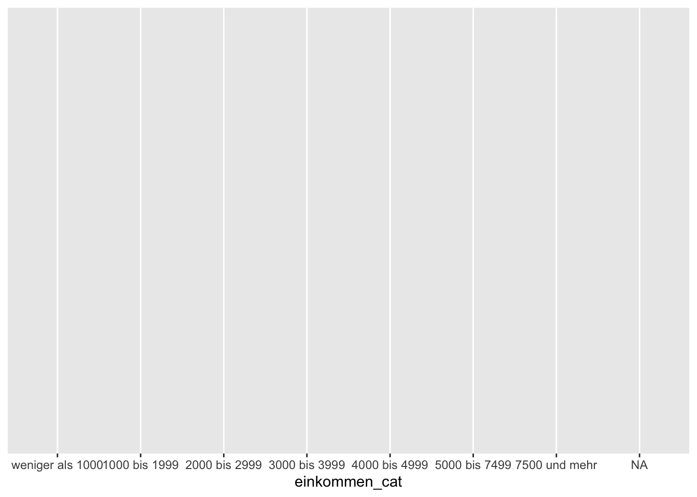
Nun fügen wir den geom hinzu, der ein Balkendiagramm (englisch: “barplot”) erzeugt. Er lautet: geom_bar(). Dazu schreiben wir lediglich ein + an das Ende der Codezeile und fügen den geom hinzu (wir verzichten hier auf das Argument x, da wir nur eine Variable berücksichtigen).
ggplot(data = gles, mapping = aes(einkommen_cat)) +
geom_bar()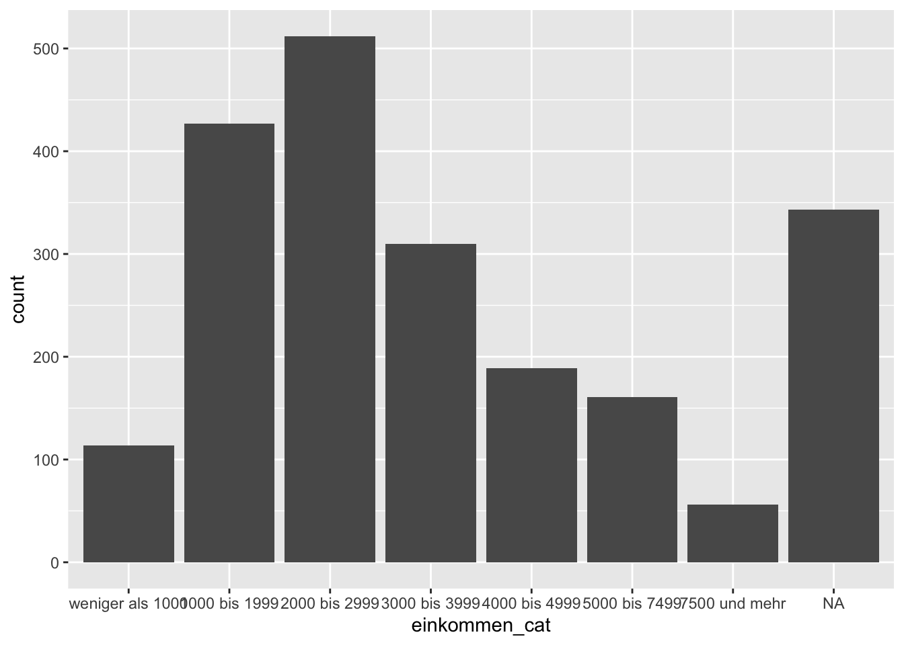
Dieser Entwurf ist bereits informativ und verschafft uns einen guten Eindruck der Verteilung. Allerdings können wir ihn noch etwas aufhübschen. Zunächst stören die NAs, die keine inhaltliche Interpretation zulassen. Wir entfernen sie, indem wir mittels eckiger Klammern [] nur die Zeilen des Dataframes gles behalten, die in einkommen_cat nicht NA sind. Wir kehren die Aussage von is.na() um, indem wir ein Ausrufezeichen ! voranstellen. Wie wir in Sitzung 2 gelernt haben, bezieht sich alles vor dem Komma in den eckigen Klammern auf die Zeilen eines Objekts. Wenn wir also !is.na(gles$einkommen_cat) in die eckigen Klammern vor das Komma schreiben, erstellen wir ein Subset von gles, das nur die Zeilen enthält, für die einkommen_cat nicht NA ist.
ggplot(data = gles[!is.na(gles$einkommen_cat), ], mapping = aes(einkommen_cat)) +
geom_bar()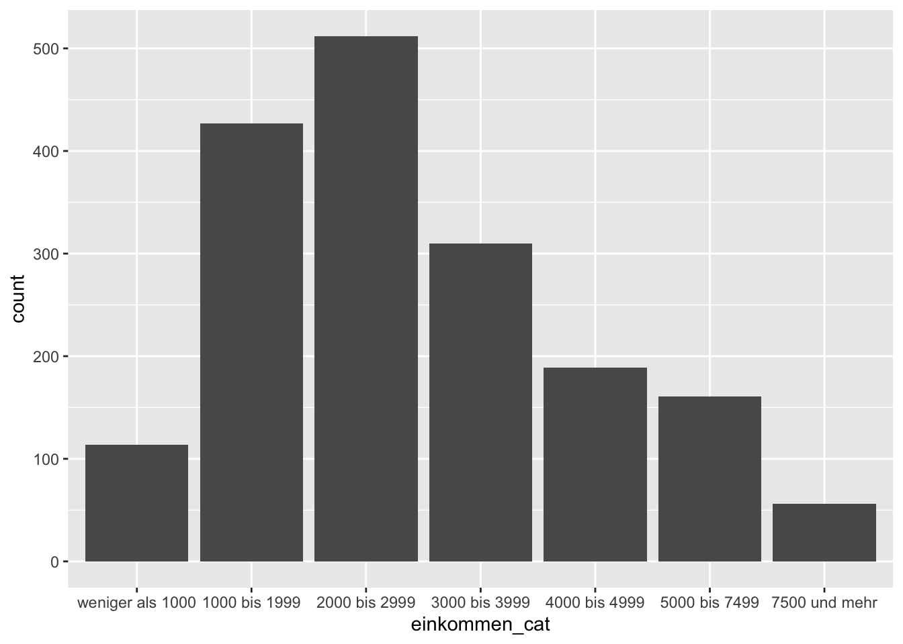
Dieser Code wirkt etwas uneinheitlich, weil bei !is.na(gles$einkommen_cat) der Datensatz gles mit $ vor der Variable genannt werden muss, bei aes(einkommen_cat) allerdings nicht. Das liegt daran, dass die “Sprache” des tidyverse, die in ggplot2 verwendet wird, die Spezifizierung von Datensätzen vor Variablen nicht notwendig macht. Hier hat also die Paketstruktur von R Folgen für die Schreibweise von dem Code: aes() ist Teil von ggplot2, is.na() nicht.
Des Weiteren fehlt ein Titel und die Achsenbeschriftung ist recht technisch. Die Beschriftung der Y-Achse braucht es auch nicht unbedingt. Um die Beschriftungen des Plots so anzupassen, nutzen wir die Funktion labs() (kurz für “labels”) und spezifizieren den (Haupt-)Titel (title), den Untertitel (subtitle), die Beschriftung der X-Achse (x) und die Beschriftung der Y-Achse (y). Genau wie zuvor, wird labs() dabei mit einem + angefügt und stellt somit gewissermaßen eine weitere Schicht dar, die auf den Plot gelegt wird.
ggplot(data = gles[!is.na(gles$einkommen_cat), ], mapping = aes(einkommen_cat)) +
geom_bar() +
labs(title = "Netto-Haushaltseinkommen der Befragten",
subtitle = "GLES 2017",
x = "Haushaltseinkommen in Euro",
y = NULL)Wenn wir finden, dass die Balken etwas breit geraten sind, können wir sie mit dem Argument width (“Breite”) in der Funktion geom_bar() anpassen. Standardmäßig ist sie auf 90% des Raumes, der für eine Kategorie eingeräumt ist, eingestellt. Wir setzen sie auf 50%, indem wir .5 schreiben.
ggplot(data = gles[!is.na(gles$einkommen_cat), ], mapping = aes(einkommen_cat)) +
geom_bar(width = .5) +
labs(title = "Netto-Haushaltseinkommen der Befragten",
subtitle = "GLES 2017",
x = "Haushaltseinkommen in Euro",
y = NULL)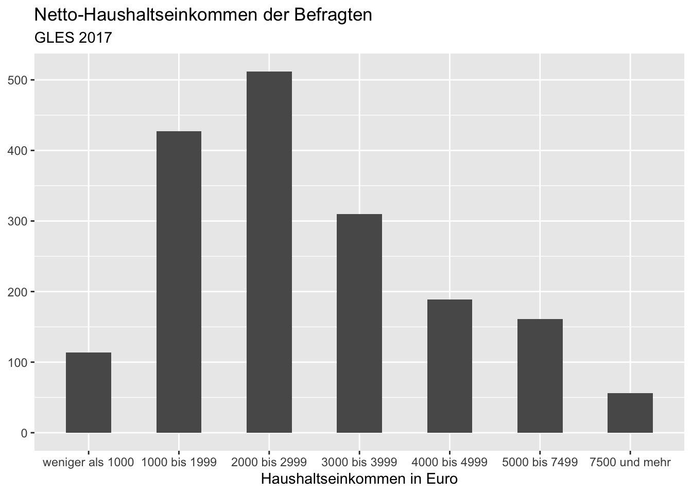
Schließlich möchten wir die Farbe der Balken verändern. Die Füllung der Balken bestimmen wir mit dem Argument fill, während wir mit color die Farbe der Umrandung anpassen. Wir wollen stahlblaue Balken, die schwarz umrandet sind. Die in R zur Verfügung stehenden Farben können Sie einfach googeln. In wissenschaftlichen Publikationen und Arbeiten im Rahmen des Studiums sollten Abbildungen allerdings nicht zu farbenfroh sein. In der Regel ist eine schlichte Darstellungsweise (Verwendung von Graustufen) angemessen.
ggplot(data = gles[!is.na(gles$einkommen_cat), ], mapping = aes(einkommen_cat)) +
geom_bar(width = .5, color = "black", fill = "steelblue2") +
labs(title = "Netto-Haushaltseinkommen der Befragten",
subtitle = "GLES 2017",
x = "Haushaltseinkommen in Euro",
y = NULL) 
4.2 Histogramm
Histogramme zeigen die Häufigkeiten pro Kategorie im Gegensatz zu Balkendiagrammen nicht durch die Höhen der Balken, sondern durch ihre Fläche (Kühnel/Krebs 2014: 61). Sie setzen metrisches Skalenniveau voraus. Inwiefern Histogramme allerdings eine Verteilung exakt abbilden, hängt von der gewählten Intervallbreite ab, also von der Breite der Balken. Alle Beobachtungen werden bei der Berechnung der Fläche eines Balkens berücksichtigt, die innerhalb des entsprechenden Intervalls liegen. Häufen sich Beobachtungen zu beiden Seiten einer Intervallgrenze, wird diese Häufung nicht angemessen repräsentiert, sondern verläuft sich in der Berechnung der Fläche beider Balken. Durch Veränderung (Verringerung) der Intervallbreite, können wir diesem Problem Abhilfe verschaffen.
In seiner einfachen Form sieht die Funktion zur Erstellung eines Histogramms wie folgt aus (hier wurde lediglich der Geom geom_bar() durch geom_histogram() ersetzt). Wir erstellen das Histogramm dabei für das Alter der Befragten der GLES:
ggplot(data = gles, mapping = aes(alter)) +
geom_histogram()## `stat_bin()` using `bins = 30`. Pick better value with `binwidth`.## Warning: Removed 1 rows containing non-finite values (stat_bin).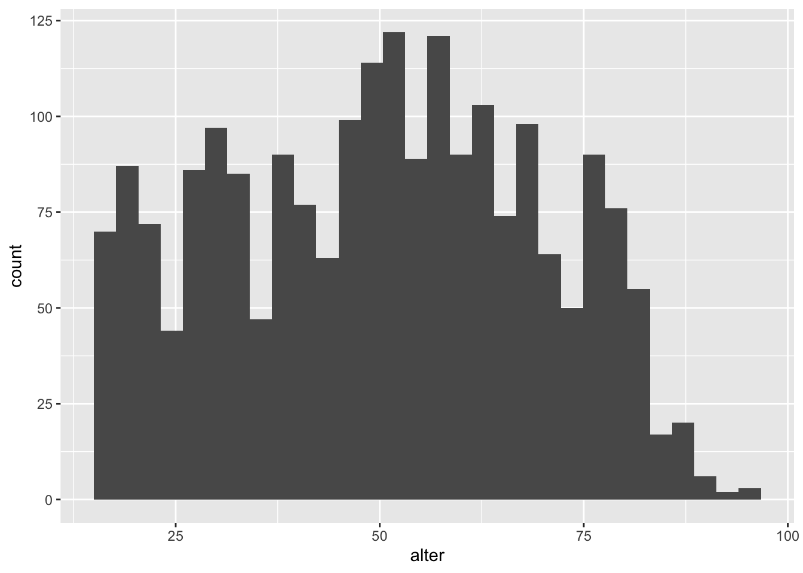
Mit Beschriftungen (parallel zum Vorherigen) und Balkenumrandungen (genau wie zuvor):
ggplot(data = gles, mapping = aes(alter)) +
geom_histogram(color = "black") +
labs(title = "Alter der Befragten",
subtitle = "GLES 2017",
x = "Alter in Jahren",
y = NULL) ## `stat_bin()` using `bins = 30`. Pick better value with `binwidth`.## Warning: Removed 1 rows containing non-finite values (stat_bin).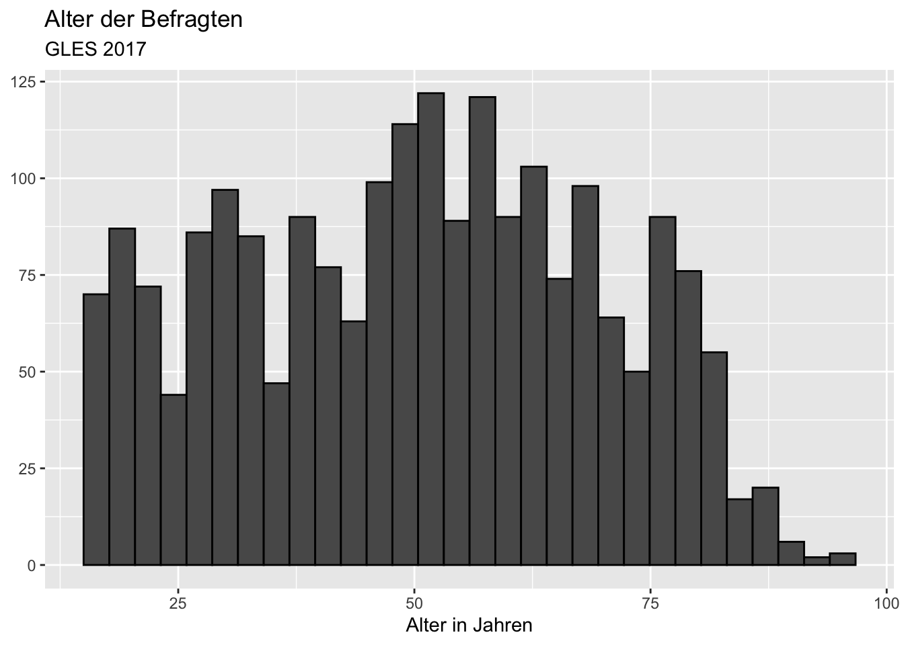
Bisher wurde dabei die voreingestellte Intervallbreite (Breite der Balken) verwendet. Wenn wir die Intervallbreite auf 10 Jahre anpassen, bildet das Histogramm die Verteilung weniger präzise ab. Dazu setzen wir das Argument binwidth (bin für “Balken”, width für “Breite”) auf 10:
ggplot(data = gles, mapping = aes(alter)) +
geom_histogram(binwidth = 10, color = "black") +
labs(title = "Alter der Befragten",
subtitle = "GLES 2017",
x = "Alter in Jahren",
y = NULL) ## Warning: Removed 1 rows containing non-finite values (stat_bin).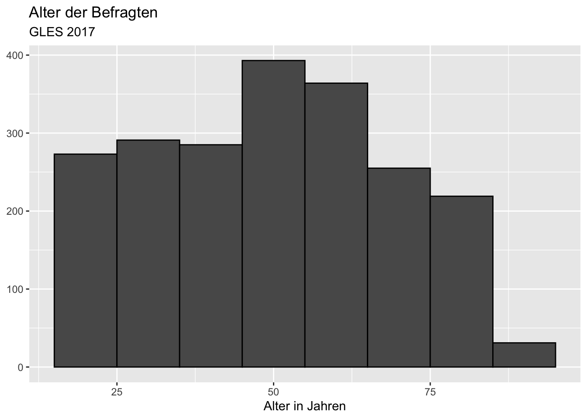
Alternativ könnten wir mit bins einfach die Anzahl der Balken festlegen, die wir erzeugen wollen, z.B. 15 Balken:
ggplot(data = gles, mapping = aes(alter)) +
geom_histogram(bins = 15, color = "black") +
labs(title = "Alter der Befragten",
subtitle = "GLES 2017",
x = "Alter in Jahren",
y = NULL) ## Warning: Removed 1 rows containing non-finite values (stat_bin).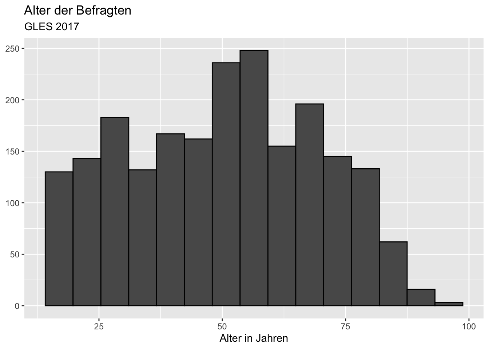
4.3 Dichteplot
Die Verteilung einer metrischen Variable können wir genauso mit Dichteplots (kernel density plots) darstellen. Im Gegensatz zum Histogramm fällt hier die Einteilung in Intervalle weg. Anstatt dessen wird die empirische Dichte als Kurve für jeden Punkt jeweils ausgehend von der Nähe von Beobachtungen zueinander berechnet. Diese Nähe wird bandwidth (“Bandbreite”) genannt (Kühnel/Krebs 2014: 62). Häufen sich Beobachtungen an einem Punkt, liegen viele von ihnen innerhalb der Bandbreite und die Dichtkurve fällt höher aus. Häufungen von Beobachtungen haben so direkten Einfluss auf den Ausschlag der Dichtekurve. Mit niedrigerer Bandbreite ist die Funktion sensibler für Ausschläge.
Zuerst erzeugen wir den Plot in seiner einfachen Form und zwar wieder für das Alter der Befragten. Wir verwenden diesmal geom_density():
ggplot(data = gles, mapping = aes(alter)) +
geom_density()## Warning: Removed 1 rows containing non-finite values (stat_density).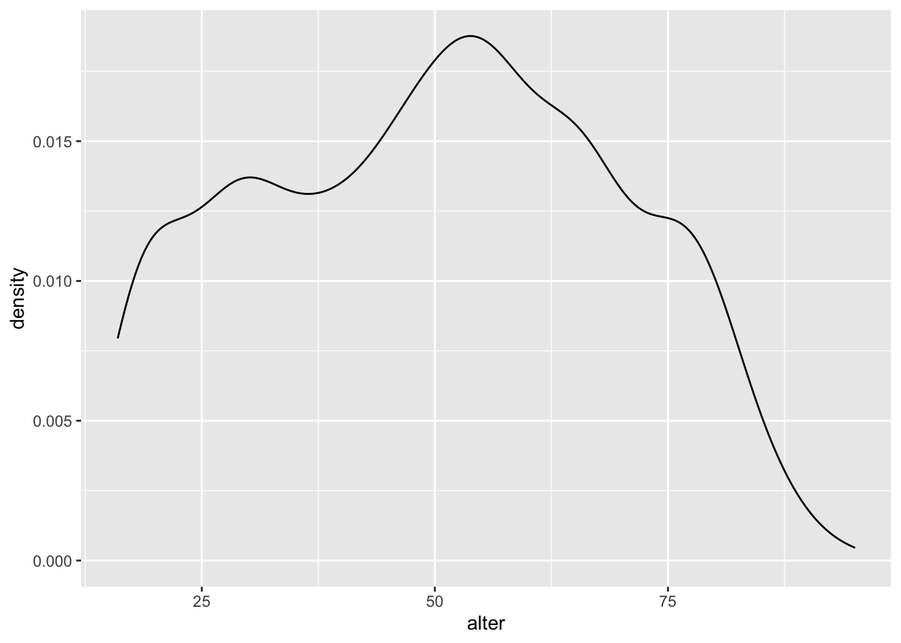
Genau wie zuvor, können wir ihn mit Beschriftungen versehen:
ggplot(data = gles, mapping = aes(alter)) +
geom_density() +
labs(title = "Alter der Befragten",
subtitle = "GLES 2017",
x = "Alter in Jahren",
y = NULL) ## Warning: Removed 1 rows containing non-finite values (stat_density).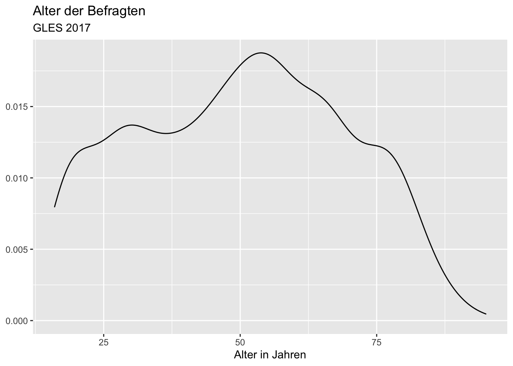
Wenn wir nun die Bandbreite anpassen möchten, können wir das über das Argument bw (“bandwidth”) innerhalb der Funktion geom_density().
ggplot(data = gles, mapping = aes(alter)) +
geom_density(bw = .5) +
labs(title = "Alter der Befragten",
subtitle = "GLES 2017",
x = "Alter in Jahren",
y = NULL) ## Warning: Removed 1 rows containing non-finite values (stat_density).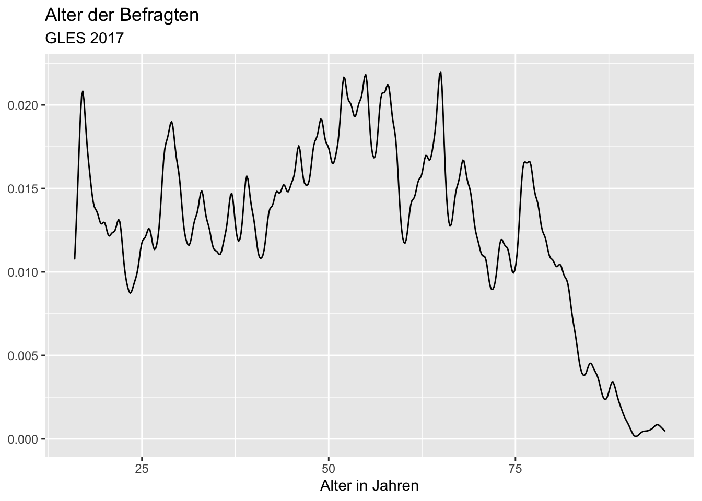
Je höher die Bandbreite, desto geglätteter die Dichtefunktion:
ggplot(data = gles, mapping = aes(alter)) +
geom_density(bw = 5) +
labs(title = "Alter der Befragten",
subtitle = "GLES 2017",
x = "Alter in Jahren",
y = NULL)## Warning: Removed 1 rows containing non-finite values (stat_density).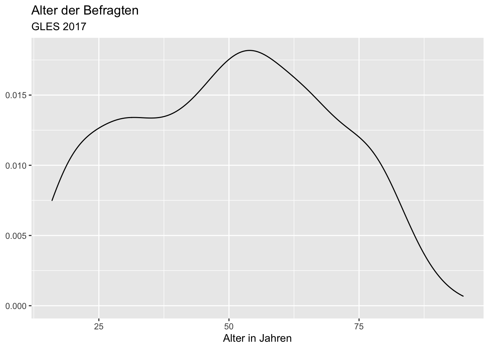
4.4 Boxplot
Boxplots stellen Verteilungen besonders anschaulich dar. Boxplots plotten eine Verteilung über ihren Wertebereich und zeigen, an welcher Stelle welche Lagemaße liegen. So weisen sie den Median (dicke schwarze Linie) und das erste und dritte Quartil, also die mittleren 50% der Verteilung (oberes und unteres Ende der Box), aus. Die Antennen (englisch: “whiskers”, zu deutsch: “Schnurrhaare”) beinhalten alle Werte, die innerhalb des 1,5-Fachen des Quartilsabstandes (der Box) liegen. Ausreißer (alle anderen Beobachtungen) werden zudem als Punkte oä. gezeigt (Kühnel/Krebs 2014: 63).
In seiner einfachen Form sieht der Code zur Erstellung eines Boxplots so aus:
ggplot(data = gles, mapping = aes(alter)) +
geom_boxplot()## Warning: Removed 1 rows containing non-finite values (stat_boxplot).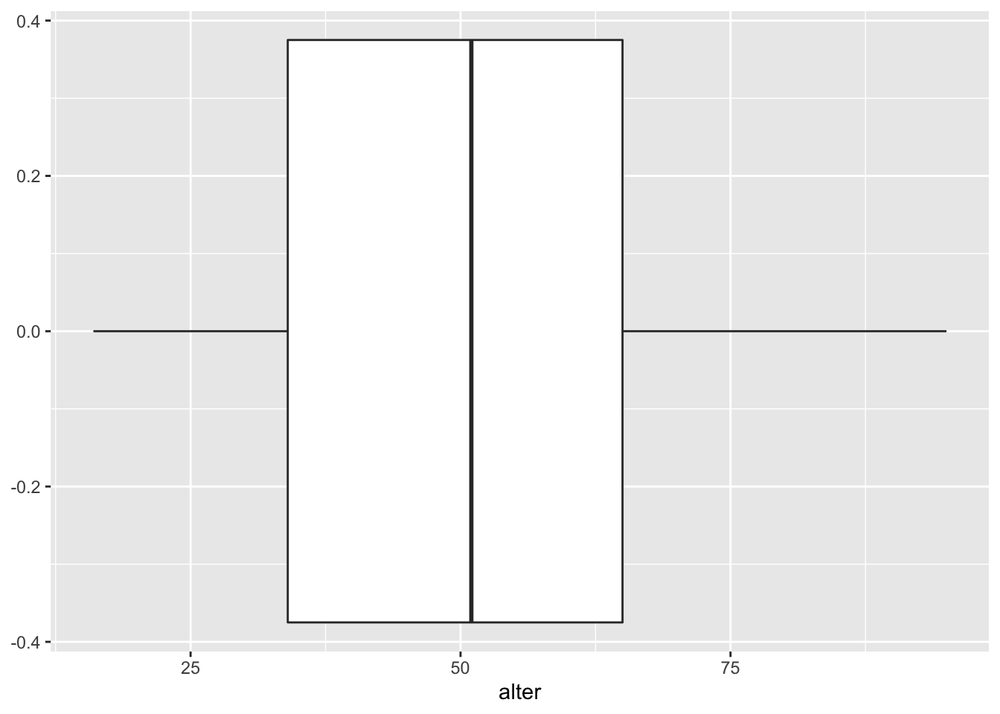
Wenn wir den Plot kippen möchten, verwenden wir die Funktion coord_flip() als zusätzliches Layer. Da sich diese nicht speziell auf die Funktion geom_boxplot() bezieht, kann diese auch bei anderen (z.B. oben den genannten) Darstellungstypen verwendet werden.
ggplot(data = gles, mapping = aes(alter)) +
geom_boxplot() +
coord_flip()## Warning: Removed 1 rows containing non-finite values (stat_boxplot).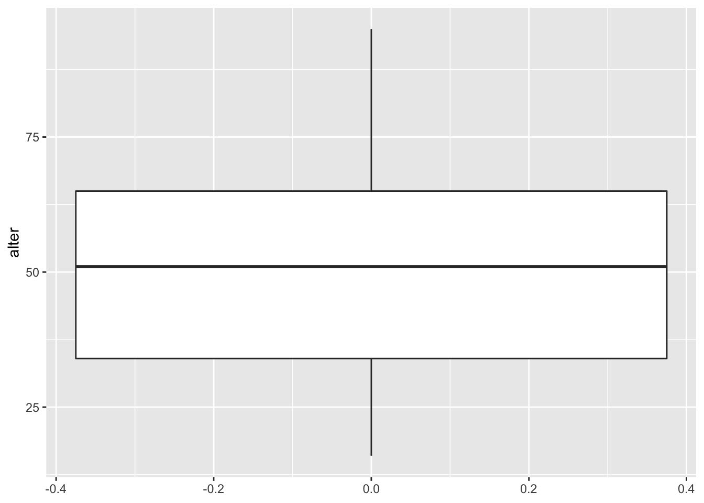
Nun fügen wir wieder die weiteren Darstellungsoptionen hinzu. Lassen Sie sich nicht verwirren: Weil das Koordinatensystem gekippt wurde, ist die X-Achse links und die Y-Achse unten zu sehen. Wenn wir mit labs() die Titel der X- und Y-Achse festlegen, sind also auch diese vertauscht.
ggplot(data = gles, mapping = aes(alter)) +
geom_boxplot() +
coord_flip() +
labs(title = "Alter der Befragten",
subtitle = "GLES 2017",
x = "Alter in Jahren",
y = NULL)## Warning: Removed 1 rows containing non-finite values (stat_boxplot).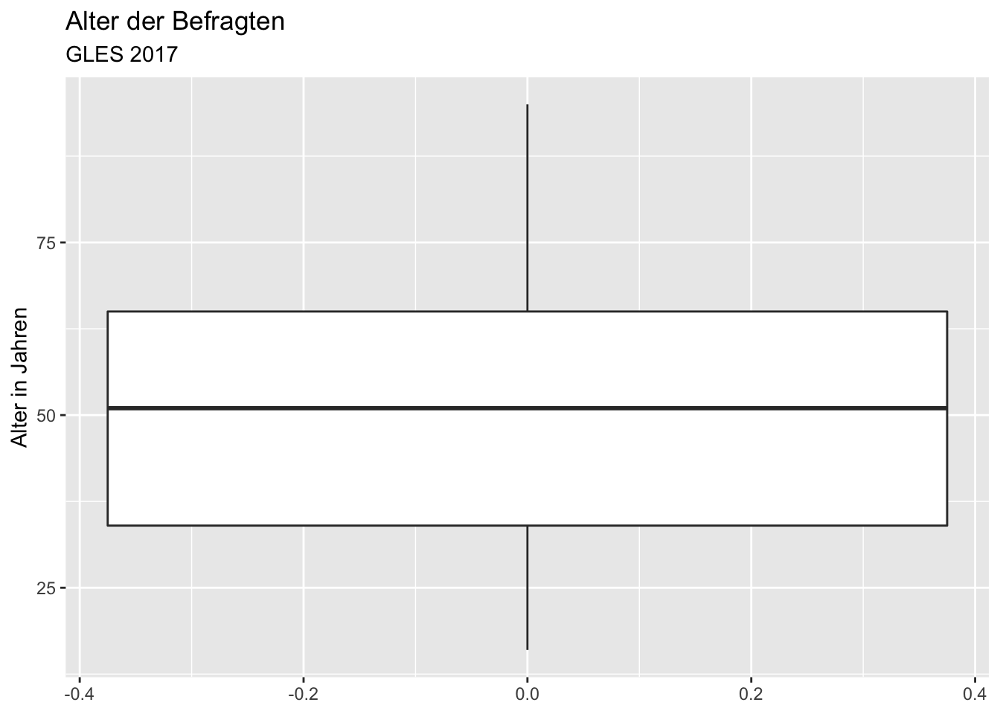
Die Skalierung des Alters ist wenig detailliert, sodass wir beispielsweise zum Ablesen der Lage des ersten und dritten Quartils sehr schätzen müssten. Die X-Achse (vertauscht) modifizieren wir mit scale_x_continuous(). Die einzelnen Skalenmarkierungen legen wir entweder über das Argument breaks fest, wenn wir die Position jeder einzelnen Markierung ausdrücklich bestimmen möchten (also z.B. breaks = c(5, 10, 15, ...)). Alternativ können wir n.breaks (“number of breaks”) verwenden, wenn wir lediglich festlegen wollen, wie viele Markierungen es sein sollen. Da wir Markierungen aller Fünf-Jahre-Intervalle möchten, ist die Verwendung von n.breaks deutlich einfacher. In diesem Fall möchten wir 18 einzelne Markierungen.
ggplot(data = gles, mapping = aes(alter)) +
geom_boxplot() +
coord_flip() +
labs(title = "Alter der Befragten",
subtitle = "GLES 2017",
x = "Alter in Jahren",
y = NULL) +
scale_x_continuous(n.breaks = 18)## Warning: Removed 1 rows containing non-finite values (stat_boxplot).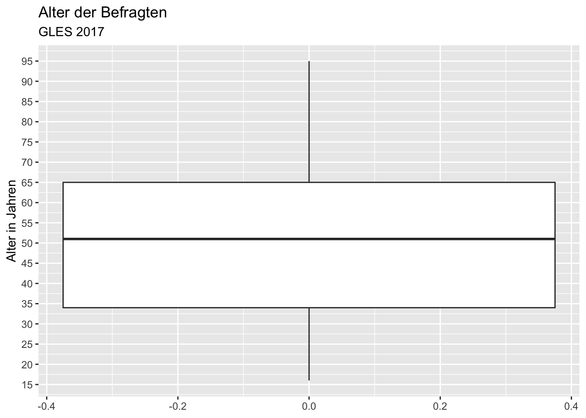
Die Person mit dem mittleren Alter ist also etwas über 50 Jahre alt. Die Befragten, die die Grenzen des ersten und dritten Quartils bilden, sind etwa 35 und 65 Jahre alt. Die jüngste Person ist 16 oder 17 Jahre alt, die älteste 95 Jahre. Es gibt keine Ausreißer, d.h. alle Befragten, die nicht im zweiten oder dritten Quartil liegen (innerhalb der Box), liegen innerhalb des 1,5-fachen der Länge der Box (das wäre bei der Variable Alter auch unwahrscheinlich, da ein Ausreißer älter als \(1,5\cdot IQR + 3. Quartil = 1,5\cdot 30 + 65 = 110\) Jahre sein müsste.).
5. Zusammenfassung
Balkendiagramme ermöglichen einen Überblick über die Verteilung nominalskalierter Variablen, Histogramme, Dichteplots und Boxplots sind geeignete Darstellungsmöglichkeiten bei metrischem Skalenniveau. Mithilfe von ggplot2 kann Datenvisualisierung in R in Form von Layers (Schichten) aufgebaut werden und ist so einfach zu kontrollieren. Eine “weiße Leinwand” erstellen wir mit ggplot(), wobei die Argumente data und mapping spezifiziert werden müssen. Weitere Schichten bestimmen den Typ des Plots und weitere Details. Wir haben hier die Grundlogik von ggplot2 kennengelernt. Wenn Sie eigene Grafiken im Rahmen einer Hausarbeit erstellen möchten, werden Sie zusätzliche Funktionen und Argumente recherchieren müssen. Dazu sei auf ?ggplot und die Hilfefunktion zu einzelnen (Geom-)Funktionen, sowie auf https://ggplot2.tidyverse.org/ und das dort verfügbare “Cheatsheet” hingewiesen.
6. Aufgaben
- Erstellen Sie ausgehend von
bicam4510einen Faktor, der die Stärke des Bikameralismus in vier Kategorien misst: schwach, eher schwach, eher stark und stark. Hängen Sie diesen Faktor an den bestehenden Datensatz an. Orientieren Sie sich an der Skalierung vonbicam4510. Kodieren Sie die Variable wenn nötig so um, dass Werte, die keiner Kategorie exakt entsprechen, der jeweils nächstgelegenen Kategorie zugeordnet werden. Erzeugen Sie nun ein Balkendiagramm der Stärke des Bikameralismus. Vergeben Sie einen sinnvollen Titel sowie Achsenbeschriftungen. - Erstellen Sie zwei Histogramme und zwei Dichteplots des Gallagher-Indizes (
disprop4510). Die Balken des Histogramms sollen jeweils weiß gefüllt und schwarz umrandet sein. Zwischen den beiden Histogrammen sollen sichtbare Differenzen bezüglich der Intervallbreite und zwischen den beiden Dichteplots sichtbare Differenzen bezüglich der Bandbreite erkennbar sein. - Erstellen Sie einen Boxplot der ENPP (
enpp4510). Die Skala soll Markierungen bei jeder halben Zahl innerhalb des Wertebereiches aufweisen.